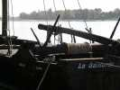
Vouzeron, la vie de château, une journée seulement malheureusement. Sauf que moi, je suis parti la veille, avec une étape déjeuner prolongée sur la Loire, à Chateauneuf. Vieux "port" ou plutôt quai en pente douce, et la paresseuse Loire avec ses bancs de sable et ses gabares...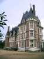
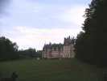
Devant le château, les pelouses déroulent leur perspective...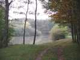
Et en bas, l'étang, presqu'un lac. A l'origine, le domaine faisait... 4500 hectares ! Il n'en reste plus qu'un petit 67 misérable.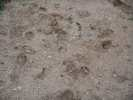
Et dans le parc, du gibier et du gros ! La nuit, on a croisé une harde de cerf, au matin, 4 paons... Les sangliers laissent leurs traces sur la terrasse du château...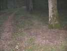
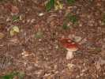
Comme il fait humide et assez chaud, le parc fourmille aussi de champignons...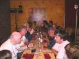
Pour ceux qui sont là samedi soir (21 !) repas au restaurant à Vierzon...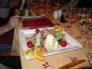
Un bon repas, déjà la salade en entrée était prometteuse !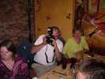
Les flashs ont crépité toute la soirée, y en a qui ont du matos, faut voir ! Au moins deux kilos, l'appareil ! Et il faut un sac à dos pour tout porter avec les objectifs, les flashs, etc !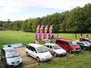
Le lendemain matin, après une nuit dans les chambres d'hôte du château, et un petit déjeuner au château, les voitures se mettent en place en haut de la pelouse.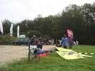
Les campements se montent tranquillement, d'autant plus qu'il n'y a pas de vent...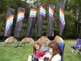
Hurricane a monté un ensemble impressionnant avec set de tentes, bannières arc-en-ciel, fauteuils, etc !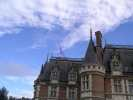
Le ciel s'éclaircit, le vent monte (doucement...), j'inaugure avec mon oiseau léger mais j'ai du mal à dépasser le toit du château...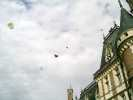
Et puis ça monte petit à petit, plus nombreux et plus haut, avec d'abord des cerfs-volants plutôt légers...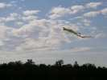
Puis avec des deltas plus lourds, mais avec quand même pas mal de surface... Même le grand flow-form de Vierzon volera dans l'après-midi (pas longtemps...).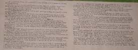
Dans le château, une notice explique l'historique de la chose, un peu orientée sur la fin "vive la CGT et les travailleurs" qui ont "mis en valeur" (sic) le château !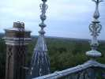
Pendant les creux de vent, on visite l'intérieur, jusqu'aux terrasses. Tout près, les gigantesques "épis" qui décorent la pointe de toutes les tours. Et tout autour, jusqu'à l'horizon et sur 360°, la forêt...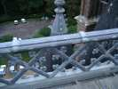
Les splendides rambardes ouvragées cachent en bas, tous petits, les cervolistes et leurs voitures...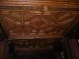
A l'intérieur, très haut, plafonds à la française (à poutres, avec autant de bois que de vide), ou à caissons dans l'escalier...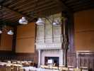
Dans la grande salle à manger, la superbe cheminée abrite, oh décadence... le four à micro-ondes !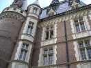
Mais les propriétaires du château nous surveilleraient-ils de leur fenêtre à meneaux ?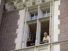
...Non, ce sont Bernadette (qui va bien, merci) Reine et Sylvien qui jouent les châtelains !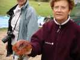
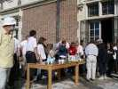
Mais la matinée se termine, on va profiter du cadre de la terrasse pour un petit apéro de prolétaire, surtout pour encourager les discussions...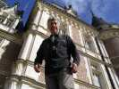
Jean-Pierre s'est perché sur un socle. Pour faire la statue ? Non, pour prendre des photos "aériennes"...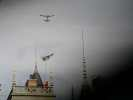
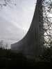
Bon, hé bien, au revoir Vouzeron (surtout que le château sera vendu l'année prochaine)... Mais je rentre par le chemin des écoliers ! Lundi matin, visite du radiotélescope de Nançay. On est deux (en comptant le guide...).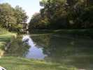